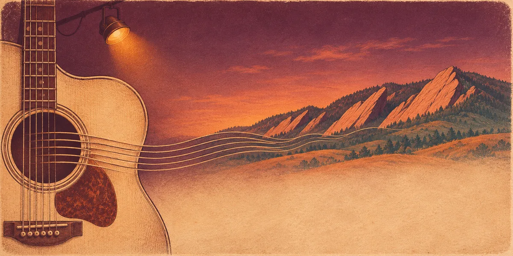

1 Performer
Inquire about solo acoustic →
Solo acoustic
Reb with guitar, keyboard or harmonica. Suited to listening rooms, bistros and private gatherings.
Live music in Boulder, Colorado
Reb Yen is a Boulder, Colorado-based singer-songwriter and multi-instrumentalist performing original music and select covers across multiple genres, including Americana, Folk, Indie, Country, Pop, and Rock. Available for intimate acoustic sets, duo performances, and full-band shows throughout Boulder and Colorado’s Front Range.

Meet Reb
Fans and critics describe Reb as a strong vocalist and accomplished musician, playing guitar, keyboard, and harmonica. She performs multiple genres, including Americana, Folk, Country, Pop, Rock, and Indie. Based in Boulder, Colorado, she continues to write and perform original music, sharing her songs and connecting with audiences through live performances.
Three original songs — Take Me Crazy, Should I?, and Gotta Let It Go — have been featured on the ReverbNation homepage.
Featured artist at NYC’s Lincoln Center, Walt Disney World, Universal Studios, Nashville’s Commodore Grille, and two European tours.
Performs on guitar, banjo, keyboard, and harmonica, with formal vocal training and NATS coaching experience. All recordings feature live vocals and live-recorded instrumentation — no AI-generated vocals or tracks.
Come listen
From an intimate acoustic set to a full-band performance. Original music and carefully chosen covers.
Reb with guitar, keyboard or harmonica. Suited to listening rooms, bistros and private gatherings.
Two players and harmonies. A fuller sound that still fits smaller rooms and events.
Originals and covers with the band, for festivals, main stages and lively venues.
Roots Music Project
St. Julien Hotel
The Trident
Bricks On Main
The Alley
Attic Bistro
Walt Disney World
Universal Studios
Hard Rock Café
Commodore Grille, Nashville
Lincoln Center, with the Aman Ensemble
European tours
For hosts & venues
Reb performs originals and curated covers on guitar, keyboard, and harmonica. The site describes her live work for listening rooms, bistros, private gatherings, smaller rooms and events, festivals, main stages, and lively venues — from an intimate acoustic set to a duo or full-band performance.
If you are looking for a Boulder live musician for your event, share your plans, dates, and live music possibilities through the contact form. Confirmed public show details are posted on the site when available.
Quick answers
Yes. Reb Yen is a Boulder, Colorado singer-songwriter and multi-instrumentalist who performs at local Boulder and Front Range venues.
Solo acoustic, duo, or full band — from an intimate acoustic set to a fuller ensemble for festivals, main stages, and lively venues.
Both. She writes, arranges, and performs original songs, and also performs curated covers.
Use the contact form on the homepage. For live music inquiries, share your event date, location, and plans.
Live music in Boulder — connect with Reb about your event, preferred format, and timing.